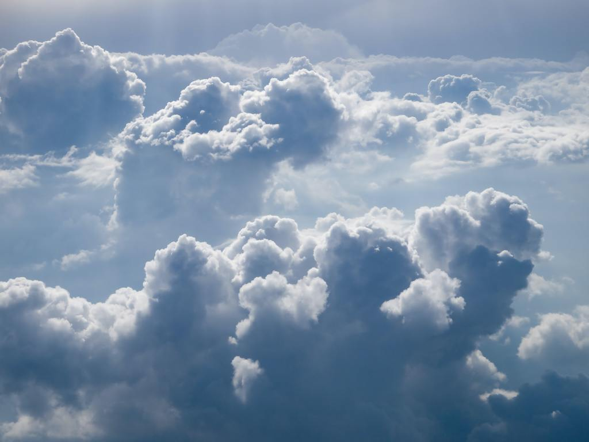

Pros and cons of observing from the ground.
- Pros
- It's easy for people to reach the telescope, to mend things that break, or improve the telescope over time.
- The observer can control the telescope in real time and change plans flexibly if something exciting happens.
- Cons
- Atmosphere - only certain wavelength bands can get through the Earth's atmosphere, so you are limited to observing in visible light (400-700 nm) or radio (1mm +).

-
Weather - clouds can block out the visible light from stars (but not radio)
>
Light pollution - city lights (and Starlink satellites!) can interfere with visible-light observations. Civilisation makes a lot of radio noise, too.


Except at very high latitudes, the night is only so long, and for visible light this limits how long you can observe in one session.